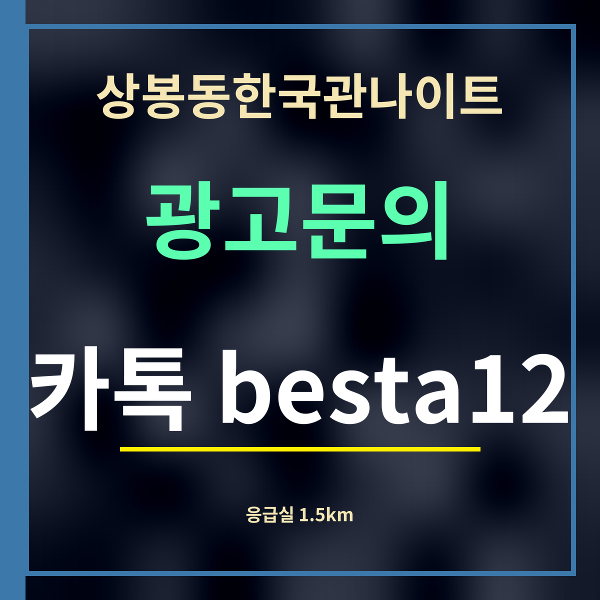

상봉동한국관나이트 근처 응급실 안내, 가장 가까운 1.5km
이 쪽은 가게와 제휴하지 않고 만든 안내입니다. 병원 이름은 9월 27일 카카오맵에서 「응급실」로 분류된 곳을 옮겼고, 거리는 두 지점 좌표 사이를 곧게 잰 값입니다. 위급하면 119가 먼저입니다.

요약: 상봉동한국관나이트에서 가장 가까운 응급실은 녹색병원 응급실(사가정로49길 53)로 직선 1.5km 남짓입니다. 위급하면 직접 가기보다 119에 먼저 알리세요.
거리순 응급실
| 녹색병원 응급실 중랑구 사가정로49길 53 | 1,491m |
| 동부제일병원 응급실 중랑구 망우로 511 | 1,845m |
| 삼육서울병원 응급의료센터 동대문구 망우로 82 | 2,257m |
| 경희대학교병원 응급의료센터 동대문구 경희대로 23 | 3,301m |
| 원자력병원 응급실 노원구 노원로 75 | 3,597m |
| 한양대학교구리병원 응급의료센터 구리시 경춘로 153 | 3,927m |
가기 전에 알아둘 것
술자리 뒤에는 넘어져 다치거나 몸이 갑자기 나빠지는 일이 생길 수 있습니다. 의식이 흐리거나 숨쉬기가 힘들 정도라면 스스로 병원을 찾아가려 하지 말고 119에 전화하세요. 구급대가 상태를 보고 알맞은 병원으로 옮겨 줍니다.
가벼운 상처라면 늦은 시간에도 문을 여는 응급실을 찾아가면 되지만, 응급실마다 진료 과목과 그날 사정이 다를 수 있습니다. 출발 전에 지도 앱에서 해당 응급실 정보를 한 번 확인하세요. 표의 거리는 직선거리라 차로 가면 조금 더 걸립니다.
일행이 쓰러졌다면
혼자 두지 말고 곁에 있으면서 119의 안내를 따르세요. 몸을 무리하게 흔들거나 억지로 물이나 음식을 먹이지 않습니다. 구급대가 오면 무엇을 얼마나 마셨는지, 언제부터 상태가 나빠졌는지를 알려 주면 도움이 됩니다.
자주 묻는 것
- 가장 가까운 응급실은 어디인가요?
- 녹색병원 응급실(중랑구 사가정로49길 53)로, 상봉동한국관나이트에서 직선 1,491m입니다.
- 두 번째로 가까운 곳은요?
- 동부제일병원 응급실(중랑구 망우로 511)로 직선 1,845m입니다.
- 위급하면 어떻게 하나요?
- 직접 가기보다 119에 먼저 전화하세요. 구급대가 알맞은 병원으로 옮겨 줍니다.
한 줄 정리: 상봉동한국관나이트 근처 응급실은 녹색병원 1.5km · 동부제일병원 1.8km — 위급하면 119가 먼저입니다.
가벼운 약은 근처 약국에서 살 수 있습니다.